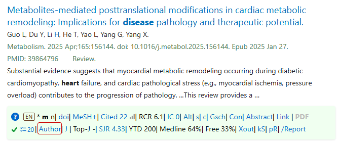

Every element on the bar, what it means, and where the number comes from.
This is the same content as the ? help inside the extension.

| Symbol | Meaning | Reference |
|---|---|---|
| Retracted | The article has been retracted from the literature. Clicking shows both the original PMID and the retraction PMID. A retraction notice itself is marked too, and clicking it shows which article it retracts. | NLM errata policy |
| * | High-impact article; the row is shown on a green background. Marked when the article's score meets your threshold — see the formula. | — |
| e / E | e: has a correction or erratum. This is not a retraction; roughly 1% of articles have one. Clicking shows the original and correction PMIDs. E (bold) in the same place: the journal has published an expression of concern, a formal warning about the article that stops short of a retraction. When an article has both, E is shown and clicking lists the article, the concern notice and the correction. Erratum and concern notices themselves are marked too. The Report and the Excel export list the two separately. | NLM errata policy |
| p | Preprint — not yet peer reviewed. Useful for early access, but read with the usual caution. | NIH preprints |
| m | Indexed for MEDLINE. | MEDLINE overview |
| n | New — under two years old, measured by PubMed's create date [crdt], which never changes. Publication dates sometimes do. |
— |
| t | Trending — currently in PubMed's top 1,000. The exact logic isn't public, but "new and heavily viewed" is close. | PubMed Trending |
| Element | Meaning | Reference |
|---|---|---|
| Cited n | Citation count from iCite, provided by the NIH — the same agency that runs PubMed. Several sources of citation counts exist, including PubMed itself; iCite is the best overall fit. When iCite is down or slow, counts come from Europe PMC instead. | iCite |
| Chart icon | After Cited. Blue when the article has monthly data: click for a chart of its iCite citations over the last 12 months — the count at the start, then each month's gain stacked on the total before it. A dashed red box marks a month where iCite lowered the count (a correction). Grey means no monthly data: the charts cover only articles added to PubMed in the last 36 months that are among the 40,000 with the most citations gained in the past 12 months. Updated once a month. | iCite Citation Gains |
| RCR n.n | Relative Citation Ratio — an iCite measure defined as the citations per year of a paper, normalized to the citations per year received by NIH-funded papers in the same field and year. A citation-based measure of scientific influence. Shows - when iCite is unavailable, since no other source computes it. An RCR above 99 is shown on the bar as a whole number (123.4 shows as 123); the Report and the exports keep the full value. |
iCite metrics |
| IC n | Influential Citations — citations where the cited work had a significant effect on the citing work, identified by a machine-learning model that reads citation context. Shows - if not found. |
Semantic Scholar |
| Alt | Altmetric Attention Score — a weighted count of attention from social media, news and policy documents. Links to the article's Altmetric page. | Altmetric |
| ? | Opens the help for every element of the bar, with this article's overall score at the top. | — |
| Overall Score | A numeric quality score combining MEDLINE indexing, citation count, RCR, journal SJR, trending status and influential citations. Shown at the top of the citation report. | Formula |
Most tools that highlight "high impact" papers won't tell you what that means. Here is the actual function. The default threshold is 5, adjustable from 1 to 6 in the extension's settings. You can disagree with the weights — but you can see them, and you can move the line.
function calculateScore(item) {
let score = 0;
// MEDLINE: 2.25 points
if (item.recordStatus === 'PubMed - indexed for MEDLINE') {
score += 2.25;
}
const citations = parseInt(item.Citations);
const crc = parseFloat(item.RelativeCitationRatio);
if (item.PublishCurrent === 'n') {
// Recent articles (< 2 years)
// Citations scoring
if (citations > 30) score += 2.25;
else if (citations > 15) score += 1.75;
else if (citations > 5) score += 1;
else if (citations > 2) score += 0.25;
// RCR scoring
if (crc > 2) score += 1.25;
} else {
// Older articles (>= 2 years)
// Citations scoring
if (citations >= 200) score += 3.5;
else if (citations >= 50) score += 2.75;
else if (citations >= 10) score += 1.5;
// RCR scoring
if (crc > 10) score += 1.25;
else if (crc > 5) score += 0.75;
}
// SJR: 1.25 points
if (item.SJR !== '-' && item.SJR > 3) {
score += 1.25;
}
// Trending: 1 point
if (item.isTrending) {
score += 1;
}
// Influential Citations: 0.5 points
if (item.s2Url && item.influentialCitations >= 1) {
score += 0.5;
}
return score;
}| Element | Meaning |
|---|---|
| doi | Opens the article's DOI in DOI Lookup, which checks retractions, citations, journal metrics and open access across a dozen sources. Up to 15 DOIs can be collected and viewed together. Greyed out when the article has no DOI. |
| MeSH+ | Two lists. MeSH (Medical Subject Headings) are NLM's controlled subject tags, assigned to MEDLINE records; other records show "No MeSH data". Keywords are the article's own terms, usually from the authors, with any added by an indexer listed separately. Keywords often name newer concepts MeSH does not have yet, and can be searched with the [ot] tag. Neither list is ever machine-translated, so both can be copied straight into a PubMed search. |
| s | Similar articles, from PubMed's own similarity list. |
| c | Articles in PubMed citing this one. Differs slightly from iCite, which uses a different method. |
| Gsch | Google Scholar, matched by DOI (about 97% of PubMed articles have one), falling back to the title when there isn't one. |
| Con | Connections — an interactive citation graph built from OpenAlex data, with three views: papers this one cites (Inside), papers citing it (Outside), and a combined Mix. Bubbles are colour-coded by journal quality and tagged where free full text exists. Re-centre on any paper, or run a multi-level expansion to surface the most co-cited foundational works nearby. |
| Abstract | The abstract, inline, without leaving the results page — present on about 95% of recent journal articles — with the plain-language summary when there is one, and the article's publication type under the title. A Translate row translates the title, abstract and summary with Chrome's built-in translator, with the English original underneath. Below a divider, the full text loads automatically when it can be shown here: open-access articles from Europe PMC, other free articles that PubMed Central releases for text mining from PMC itself. Tables appear as plain rows, figures by their captions, and references are left out. When it cannot be shown, the line links to where it can be read. |
| link | Full text. PubMed holds the abstract and metadata but not the article itself. Where a free version exists the link is shown green: PMC first, then a free legal copy found through OpenAlex (the publisher's open-access page or a repository copy), then articles PubMed itself marks as free. A preprint is not counted as a free copy. Otherwise it points at the publisher, which may be paywalled. The Report says which kind of free copy it is. PDF beside it opens the free PMC PDF when there is one, and is grey when there is not. |
| ✓ | Adds the article to your export list (grey = not added, green = added; click again to remove). Its full PubMed record is fetched as you tick, and selections stay checked across pages and new searches. |
| Checklist icon | Opens the export list, with a count of articles. Actions: Clear all · Open in new tab (as a PubMed search, first 200) · Download .ris · Download .nbib — both downloads carry full records with abstracts and MeSH terms. AI pack (.zip) puts up to 40 articles into one zip for an AI tool: free full text where it exists, otherwise the abstract, plus a README; Convert PDF turns a PDF you have into text in your browser. AI table (experimental, Chrome 138+) reads each abstract with Chrome's built-in AI on your own computer and fills one row per article: design, population, sample size, intervention and main finding — check every row against the article. |
| Author | First and last authors — by convention the first leads the work and the last leads the lab — with affiliations, PubMed and ORCID search links, the ROR ID of each author's institution (from PubMed, or OpenAlex when PubMed has none), and h-index, i10-index, works, citations and two-year citation rate from OpenAlex. Metrics require an ORCID; name-based matching is not used for them, because it catches the wrong researchers. Author gets a red outline when the first or last author has other retracted papers in OpenAlex; this is about the author, not this paper. |
From J onward, the second line describes the journal rather than the article.
| Element | Meaning |
|---|---|
| J | Journal panel: full name, print and electronic ISSN, NLM ID (linked to the NLM Catalog), SJR with best quartile and Top-J. From the Journal Ranking data: the journal's rank and articles added to PubMed this year, growth on the same months last year, Medline %, free full text % and ORCID %, and retractions this year and last. OpenAlex adds country, publisher, open access and DOAJ status, APC, h-index, 2-year mean citations and first year. The same lines are in the Report. |
| Top-J | A deliberately small, highly selective curated list of top medical journals, matched by ISSN and including associated journals within a publisher umbrella. Current list: Annals of Internal Medicine, British Medical Journal (BMJ), European Heart Journal, Journal of the American College of Cardiology, JAMA, Lancet, Nature, New England Journal of Medicine. |
| SJR | SCImago Journal Rank — a free, widely respected measure of journal visibility, computed with an algorithm similar to PageRank. SCImago is a research group affiliated with several Spanish universities and the CSIC. New rankings come out once a year, usually in April. The journal's best quartile (Q1–Q4) is shown in the hover text, the J panel, the Report and the Excel export: SCImago ranks a journal within each of its subject areas, and Q1 means the top 25% in at least one. |
| YTD | The journal's articles (by ISSN) over the period of the Journal Ranking data, built from a full PubMed pull run roughly monthly and shipped with each release. |
| Medline % | The share of that journal's articles, by ISSN, indexed for MEDLINE over the same period. This reflects indexing, not quality: recent articles may not be indexed yet. |
| Free % | The share of that journal's articles with free full text over the same period. |
Set an impact threshold in the popup (default 5, from 1 to 6), then High Impact filters the current page to the results that clear it — the green rows. Scan 1,000 walks up to five pages of 200 results, collecting the full data set as it goes, and shows the ones that clear it. The bar takes three to six seconds on a normal page; a full thousand takes about a minute. Return takes you back to the page you started from.
Roughly a quarter of PubMed is not primary research. Xout reopens your current search in a dialog with your query pre-filled and a checkbox for each publication type to exclude. All are checked by default; uncheck any to let that type through. The full query preview updates live, so you can search directly, or copy the string into your methods section. View Expanded shows your search beside PubMed's own reading of it, so you can see how untagged words were expanded by automatic term mapping.
Prebuilt PubMed searches on high-volume and fast-growing topics, grouped by area; click one to open it in a new tab. Each requires the topic to be the article's main subject (MeSH Major Topic or the title) and an abstract, and excludes retracted articles and their notices, errata, letters, editorials and comments; reviews, systematic reviews and meta-analyses are kept. The Years row adds a rolling limit (last 1, 5 or 10 years, or all), and the full query appears in PubMed's search box.
Opens the eight standing reports: PubMed Summary, Filters, MeSH Counts, Journal Ranking, Drift Report, ORCID Ranking, ROR Ranking and iCite Citation Gains.
Every key measure and link for one article in an easy-to-copy format. Two buttons in the extension popup export the whole page of results: Excel gives a tab-separated table of exactly what the bar shows, one row per article, ready to paste straight into a spreadsheet; and Data dumps everything — PMIDs first, then all measures, timestamps and internal fields. Full disclosure of every field the extension holds. Abstracts, grants and affiliations are fetched only when you click them, so they are not in the exports.
The copy icon at the top of the extension popup copies a reference for the PubMed search in the current tab: database, date searched, the search exactly as run, sidebar filters, number of results and URL, following PRISMA-S. The date matters because MeSH and automatic term mapping change, so the same search can return different results later.
Enter up to 20 variants of a single concept — vitamin B1,
thiamine, B-1 — and it returns PubMed hit counts for
each across four field configurations (Title, Title/Abstract, quoted,
unquoted), validates each against MeSH, and stars the terms that are both
high-volume and MeSH-backed. A "Special" mode handles custom date windows and
up to ten term groups at once.
Takes your current PubMed search and runs the same query against OpenAlex, ClinicalTrials.gov and Google Scholar, each in a new tab; a dialog lists them first so you choose which to open, and remembers the choice. A quick check on whether PubMed alone is giving you the whole picture.
EN — the tag after the ? sets the language of the
bar's hover text, the help and the popup, in ten languages. Choosing one other
than English also translates the titles and snippets of the results with
Chrome's built-in translator, on your own computer (Chrome 138 or later).
The bar itself, MeSH terms and keywords stay in English, and PubMed search
only understands English terms. Chrome's own page translation works too.
Memory — shown at the bottom of the popup, red below 2 GB free. To stop a long-used tab building up memory, the extension reopens the tab on the same page after the bar has run six times (never during a Scan 1,000); you lose only that tab's Back history. Reset Extension clears the extension's stored data, Chrome's cache and PubMed's site storage, then reopens the tab. Cookies, history and passwords are not touched.
PubMed's Abstract filter (the sidebar box, or hasabstract
in a query) is not a complete test for an abstract. Checked against the records' XML, it
counts a record with a main abstract or an English plain-language summary, but not
one whose only abstract was supplied separately by the publisher, in any language. So a
record can fail the filter and still have an abstract. The Drift Report labels the filter's
two sides has abstract (PubMed) and no abstract (PubMed),
and splits the second three ways, for all records and again for MEDLINE:
| Group | Meaning |
|---|---|
| has abstract (PubMed) | Matches hasabstract: a main abstract, or an English plain-language summary on its own (for example PMID 42758511). |
| no abstract (PubMed) | Everything else: NOT hasabstract. Made up of the three rows below. |
| ↳ non-English only | Its only abstract is in another language, usually supplied by the publisher. Searchable with hasnonenglishabstract. In September 2025 this was most MEDLINE records failing the filter (83 of 101). |
| ↳ English other only | An English abstract supplied separately by the publisher. No search filter exists; it is read from the record's XML. |
| ↳ no abstract at all | Nothing of any kind — typically letters, editorials, comments and many case reports. Also read from the XML. |
The two XML-derived groups are counted for the daily cohorts only. The year-to-date and whole-database ranges are too large to read record by record, so they show N/A there. These findings come from testing records in September 2026, not from NLM documentation, and PubMed's behaviour may change.